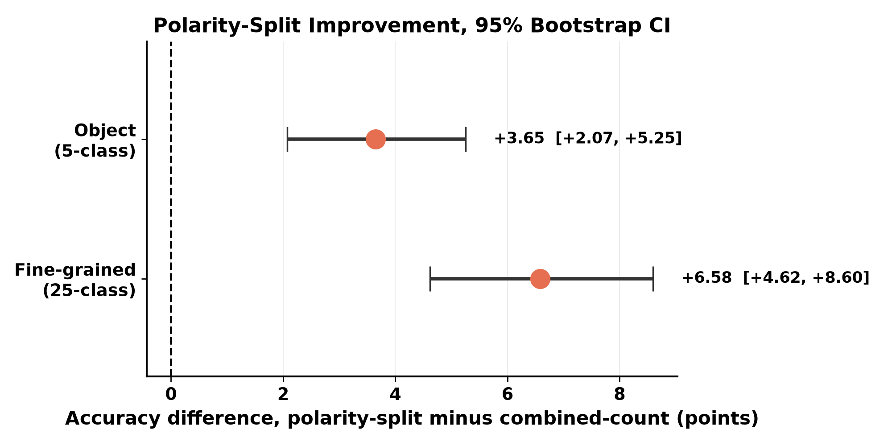
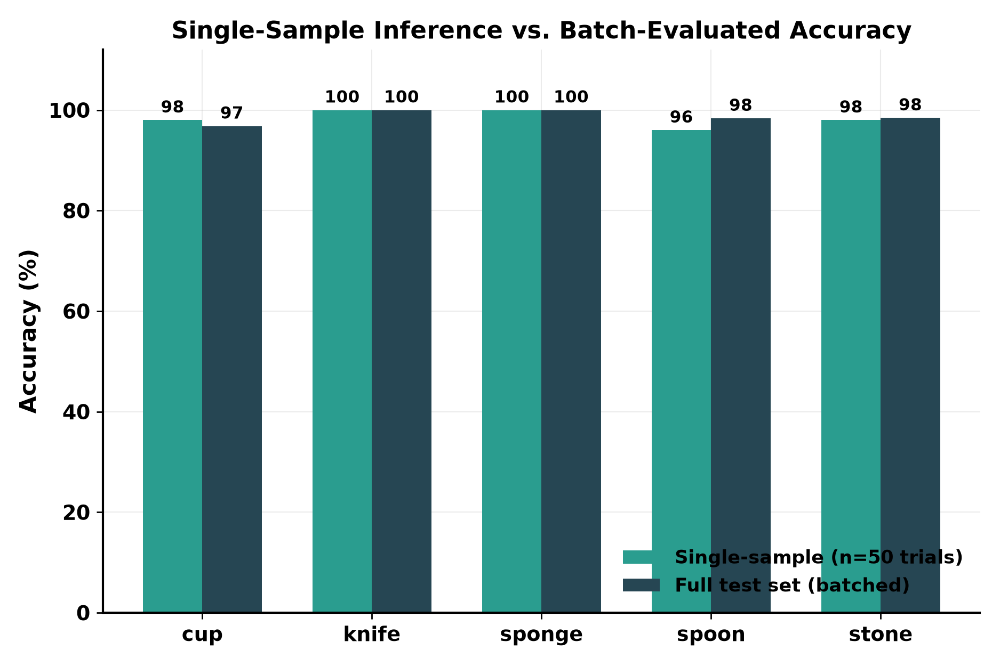

Event-Based Object and Manipulation-Action Recognition with Spiking Neural Networks for Real-Time Robotic Perception
A framework-free, manually implemented convolutional spiking neural network, trained end-to-end with surrogate gradients, evaluated against published frame-based baselines on event-camera manipulation-action recognition.
Sanaullah · Han Byung-Kil · Thorsten Jungeblut · Alexandra Dmitrienko · Dong-il Park
Research Institute of AI Robotics, Korea Institute of Machinery and Materials, Daejeon, South Korea
Event cameras report brightness changes asynchronously at each pixel, offering microsecond-scale temporal resolution and inherent sparsity well suited to latency-sensitive robotic perception. Spiking neural networks are a natural computational counterpart to this sensing modality, but most existing work on event-based action recognition instead converts event streams into dense, frame-like tensors and applies conventional deep architectures, and training spiking networks from scratch introduces its own undocumented failure modes.
This work builds a small, manually implemented convolutional spiking network, using leaky integrate-and-fire neurons trained end-to-end via surrogate gradients, for object and manipulation-action recognition from event-camera recordings. We identify and resolve two specific training failure modes, evaluate three modeling approaches for improving fine-grained classification, and validate every improvement claim statistically rather than reporting single-run numbers. The resulting model meets or substantially exceeds comparable published baselines that rely on far larger, frame-based 3D-convolutional and transformer architectures.
Three Approaches, One Task
Fine-grained, 25-class object-action classification, starting from a common flat classifier
Baseline
Flat classifier
An eight-model ensemble trained directly on all 25 object-action combinations, using the combined-polarity event-count representation.
86.62%
Task decomposition
Hierarchical + meta-ensemble
Object classification, then per-object action classification, combined with the flat classifier via a probabilistic meta-ensemble. Validated across ten independent held-out splits.
88.13% ± 0.96%
Input representation
Polarity-split encoding
Positive and negative polarity events kept as separate input channels instead of combined into one count, applied to the flat classifier. Statistically validated via paired bootstrap.
92.99%
The hierarchical decomposition and the polarity-split encoding address two different aspects of the same problem, how the task is structured versus how the input is represented, and were evaluated independently rather than combined. Polarity-split produced the larger, more robust improvement on both object and fine-grained classification; combining both approaches is left for future work.
Main Results
Compared against the best published baseline for each task granularity
Object and fine-grained classification, combined-polarity representation.
Task
Ours
Best Published Baseline
Object classification (5-class)
95.38%
93.33% (MobileNetV2-3D, 6-class)
Fine-grained object-action (25-class)
88.13% ± 0.96%
86.80% (MobileNet Transformer, 30-class)
Effect of Input Event Representation
Three input encodings were compared under an identical architecture and training procedure: the default combined-polarity event count, a binary event-presence encoding, and the polarity-split encoding.
Accuracy by input event representation, with 95% bootstrap confidence intervals, for object classification (a) and fine-grained object-action classification (b).
Binary event-presence encoding has almost no effect on object classification but causes a 27-point collapse on fine-grained classification — discarding event-count magnitude removes the motion-intensity information needed to tell apart different actions on the same object. Polarity-split improves both tasks, and improves consistently at the individual-model level, not only after ensembling:
Per-seed model accuracy, combined-count versus polarity-split, for object classification (a) and fine-grained object-action classification (b). Each point is one of eight independently seeded models; bars show mean ± one standard deviation.
Confusion Matrices
The polarity-split ensemble's remaining errors on the fine-grained task are concentrated among different actions performed on the same object, rather than between different objects.
Confusion matrix, object classification, polarity-split ensemble, full 628-sample test set.
Confusion matrix, fine-grained object-action classification, polarity-split ensemble, full 628-sample test set.
Statistical Validation
Every improvement claim is checked against sampling noise before being reported
Because the combined-count and polarity-split test sets share an identical seeded shuffle, the same 628 underlying samples occupy the same positions in both, verified directly. A paired bootstrap, 2000 resamples, tests whether the observed improvement could plausibly be noise from a small test set.
Paired bootstrap validation of the polarity-split improvement over combined-count.
Task
Observed difference
95% CI
Resamples favoring polarity-split
Object (5-class)
+3.66 pts
[+2.07, +5.25]
100.0%
Fine-grained (25-class)
+6.58 pts
[+4.62, +8.60]
100.0%

Forest plot of the paired bootstrap comparison. The dashed line marks no difference; both intervals lie entirely to its right.
Single-Sample Deployment Check
All accuracies above come from batched evaluation. A deployed system processes one sample at a time, so we separately re-ran the polarity-split object ensemble in single-sample mode, drawing 50 random trials per class.

Single-sample inference (n=50 trials per class) versus full batch-evaluated accuracy. Because the network is deterministic at inference — no dropout, batch normalization on fixed running statistics — the two agree closely for every class.
Interactive Demonstration Tool
Qualitative inspection of model behavior, provided alongside the code release
A step-by-step visualization tool replays a converted sample and shows the ensemble's class-confidence evolving in real time as more of the 100-timestep sequence is observed, with ground truth and the live prediction kept as separate, clearly labeled fields. Below, one representative demo recording per object class shows this tool in action.
Cupdrink, pound, shake, move, pour
Knifechop, cut, poke a hole, peel, spread
Spongeflip, scratch, squeeze, wash, wipe
Spooneat, hit, scoop, sprinkle, stir
Stonecarve, grind, move, play, pound
Citation
If you find this work useful, please cite our paper
@inproceedings{sanaullah2026robust,
title={A Robust Event-to-Spike Conversion Framework Preserving Temporal Dynamics for Spiking Neural Networks in Embodied Robotics},
author={Sanaullah and Jungeblut, Thorsten and Dmitrienko, Alexandra and Han, Byung-Kil and Park, Dong-Il},
booktitle={Proceedings of the 27th Engineering Applications of Neural Networks (EANN 2026)},
series={IFIP Advances in Information and Communication Technology},
volume={756},
pages={112--125},
year={2026},
publisher={Springer},
doi={10.1007/978-3-032-31144-3_9}
}